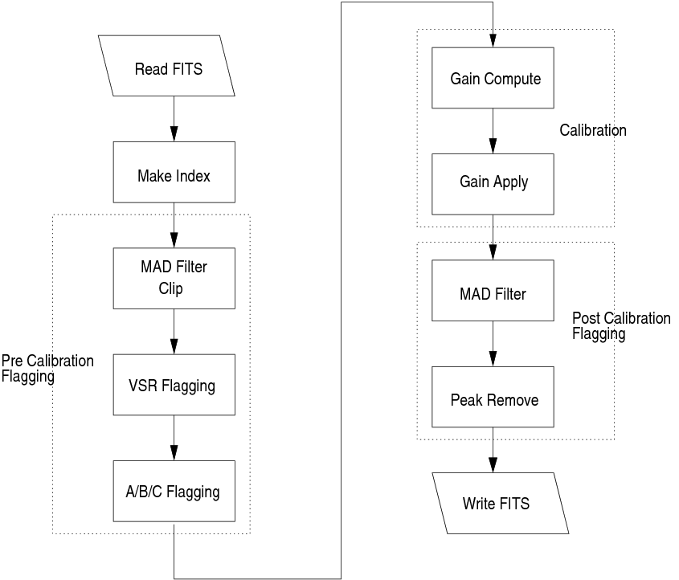
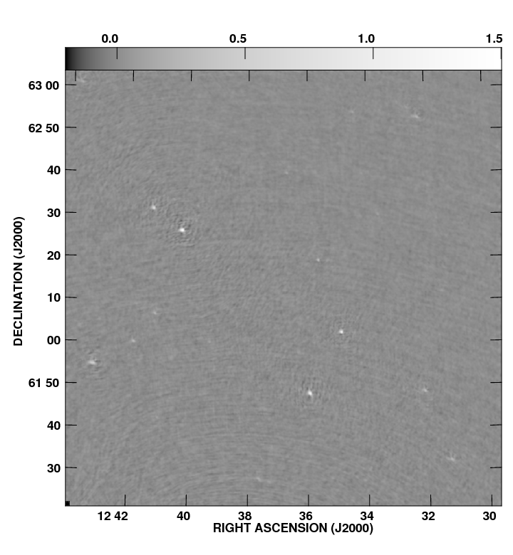
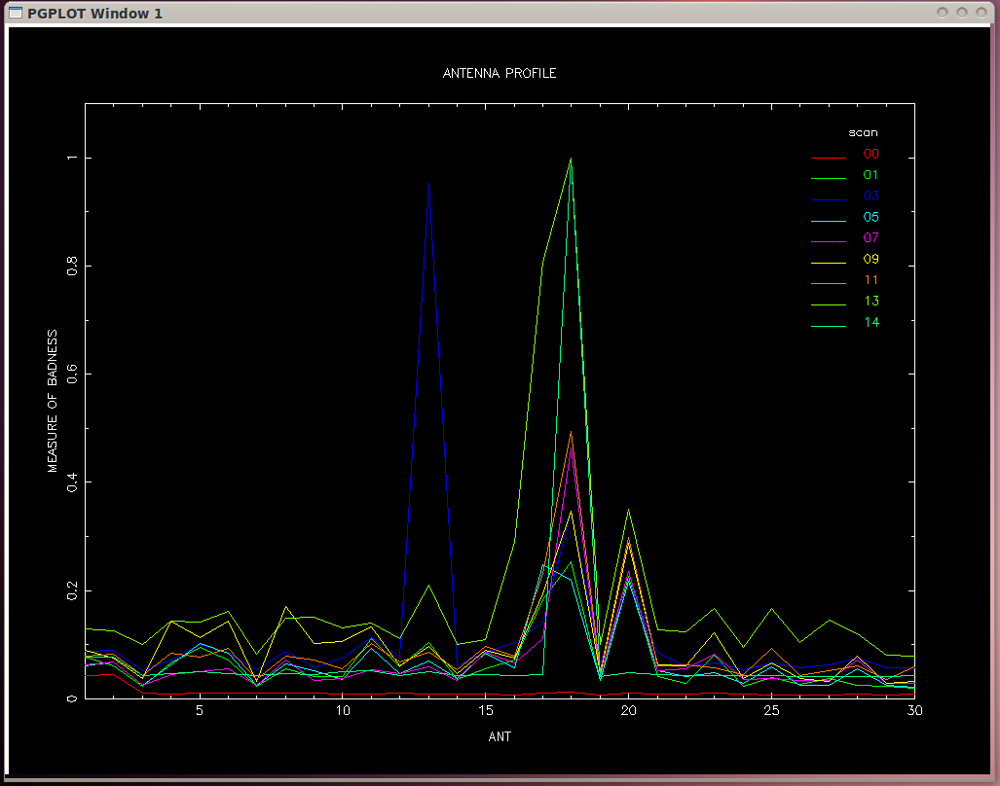
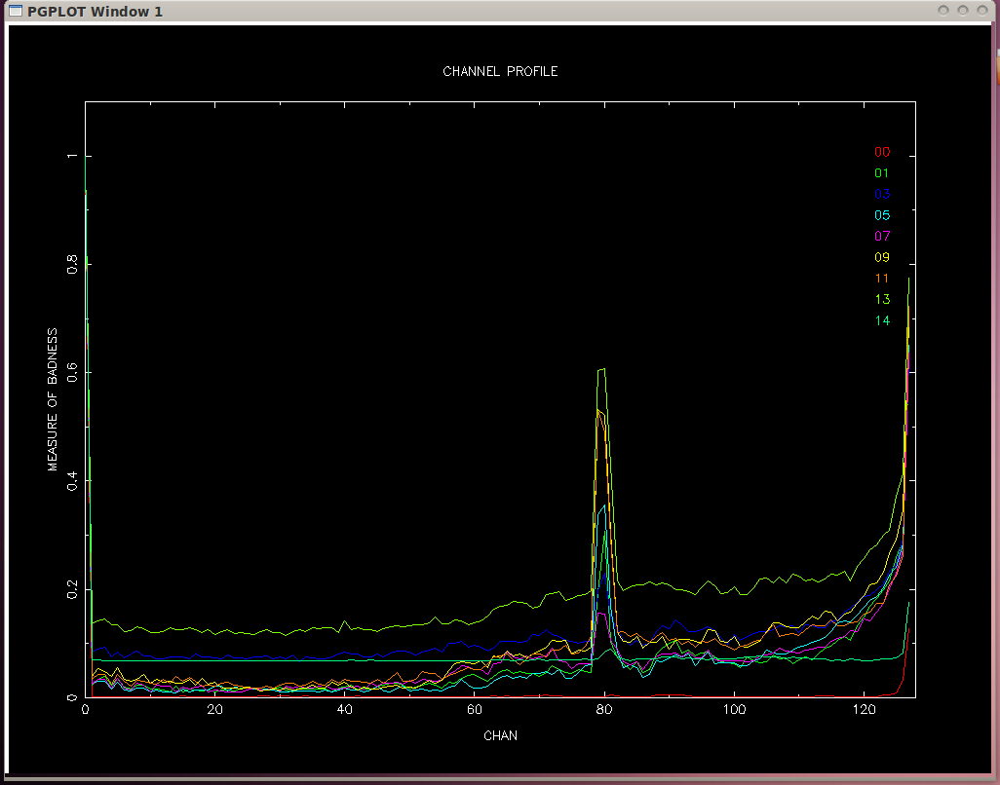
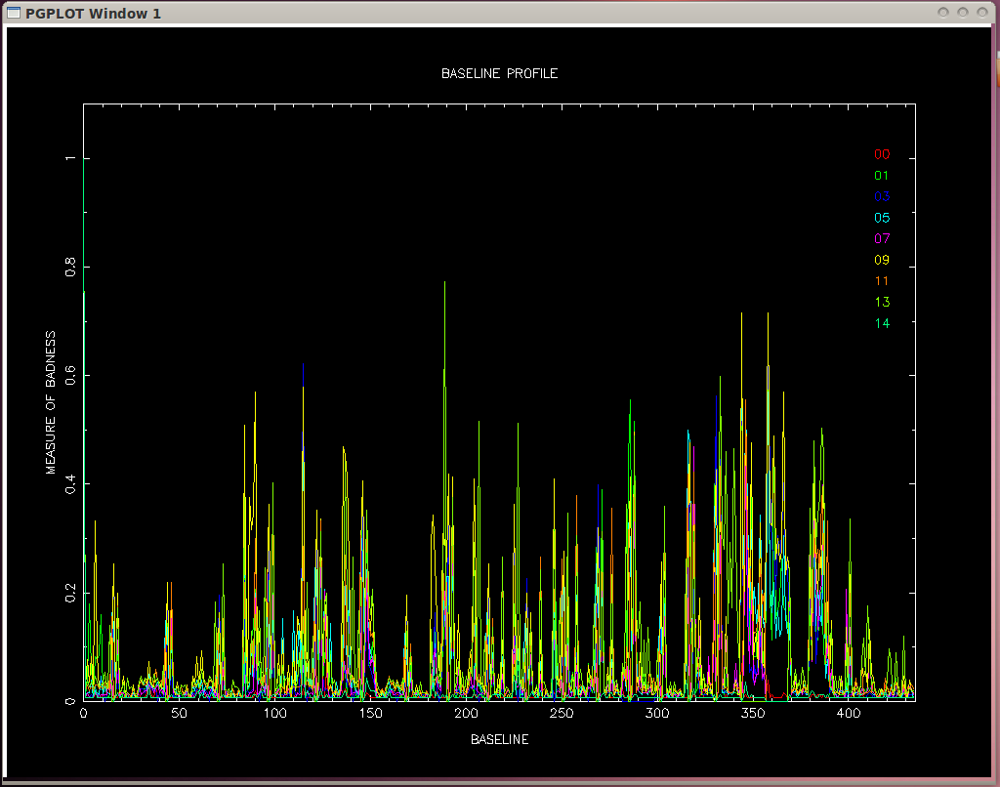
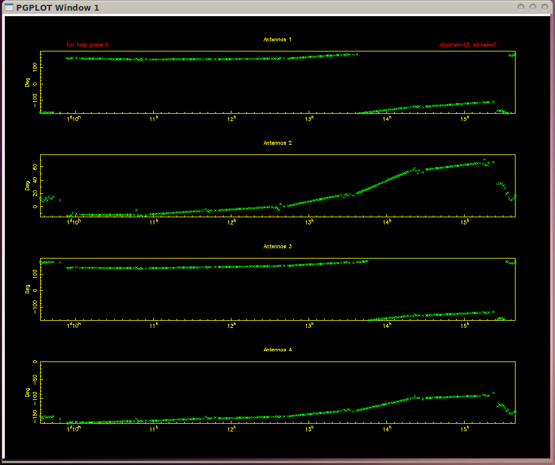
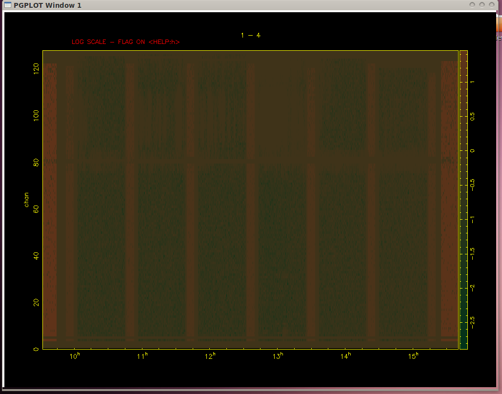
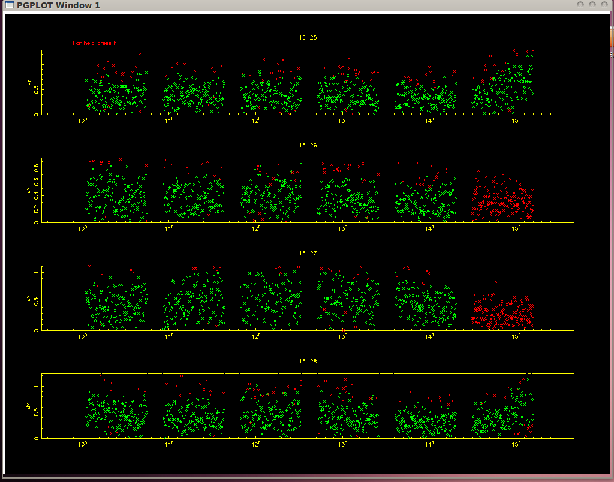

You can download the pdf version of the draft
here or
dowenload from here :
Jayanti Prasad and Jayaram Chengalur (2011)
Experimental Astronomy [arXiv: 1111.6415 ]
FLAGCAL:A flagging and calibration package for radio interferometric data
Download Code
FLAGging and CALlibraion (FLAGCAL) is a software pipeline developed by me
(with help from Prof. Jayaram Chengalur) for automatic flagging and calibration of the GMRT
data. Although this pipeline was developed keeping in mind some particular tasks, however, it can
be used for preprocessing (before importing the data in AIPS) any other interferromteric
data also (given that the data file is in FITS format and contains multiple channels & scans).
Apart from the main pipeline, I also developed few GUI based tools which can be used for
quick visualization of the data. Before descring these tools, let me first explain how
FLAGCAL works and how it should be used.
How FLAGCAL works ?
In order to identify the bad data, FLAGCAL makes the use of following considerations.
- Any data point (visibility amplitude) which has very high value is flagged (ordinary clipping).
- Representative numbers are computed for the visibility amplitude for every source and points
far away from these values are flagged (global mad filtering).
- Representative numbers are computed for the visibility amplitude for every scan and points
far away from these values are flagged (pre mad filtering). Note that this is done only for
calibrator sources.
- On the basis of the fluctuations in the phase of visibility (of calibrator sources only) we
identify bad antennas, bad baselines and bad channels and this information is exported for
traget (science sources) also (ABC flagging).
- Once some flagging is done antenna based complex gains are computed for the calibrators and
the exported to the target source.
- After calibarting, reprsentative numbers for visibility amplitude are computed for
every channles, stokes and scan and "outliers" are thrown out (post mad-filtering).
-
The last of flagging is done by removing "peaks in time" and "peaks in frequency" by iterative
smooth-threshold method.
-
At the end output FITS file is written for user specified sources and channels.

Flow chart of FLAGCAL

Image made using AIPS after pre-processing from FLAGCAL
How to use FLAGCAL ?
In order to use FLAGCAL you need the following libraries:
- cfitsio
- OpenMP (optional but recommended, is there on every GNU-Linux system)
- PGPLOT (optional, if you want GUI tools)
- GSL (as present not needed)
At present FLAGCAL is under testing and development so I have not made it completely open. However, it
is available in the following form.
- 64-bit libraries with all other libraries like cfitsio included (recommended)
- Full source code (provided only for those who want to test it and help me to improve and fix bugs)
In both the cases, the package is provided in the form of password protected files (if you do not
know the password ask me, praasd.jayanti@gmail.com)
You can get help from my README file. There is draft inside the doc directory which
exmplain FLAGCAL in detail.
Download
- Full source code
please ask me for a password if you want to use the code
Screenshots
This shows the badness of Antennas (less is better)

This shows the badness of channels (less is better)

This shows the badness of baselines (less is better)

Anteen gains computed using FLAGCAL

Anteen gains computed using FLAGCAL
Gray plot showing flagging done using FLAGCAL

Gray plot showing flagging done using FLAGCAL
Visibility amplitude showing flagging done using FLAGCAL
